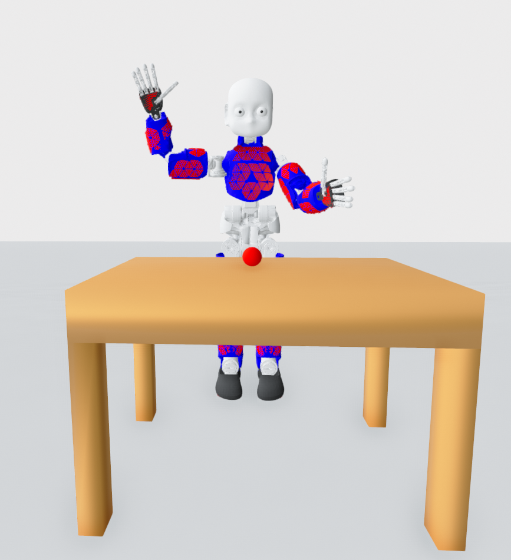

pyCub Studio handbook
Learn to control the iCub humanoid in simulation. Start with a wave, write your own controller, then test it against the course exercises.

-
Choose a mode, set up your workspace and run a simulation.
-
Move joints, read sensors and inspect Python calls.
-
Follow working joint, Cartesian and skin examples.
-
Practice motion control, gaze and grasping.
-
Installation, Docker setup, features overview and citation.
-
Look up classes, functions and their arguments.
Offline manual: Download PDF handbook